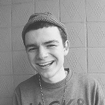
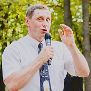

День нашого весілля
Ми не можемо уявити свій ідеальний день без
справжніх друзів. Вони нас завжди приймають та
підтримують, навіть коли не повністю розуміють
Марценюк Антон
З чого б почати? Сашка - нескінченне джерело цікавостей і талантів. Дивишся на те, що він вміє та виробляє, аж собі хочеться так. У компанії з Сашком ніколи не сумуватимеш: завжди будь готовий, як піонер, до чогось нового та цікавого. Інколи суворий, завжди пунктуальний, не відмовить, коли потрібна допомога. Хоча за необхідністю може сказати "Ні", навіть собі. Чоловік, стосунки з мамою та бабусею якого потрібно ставити у приклад. Прихильник спорту, особливо важкого та акробатичного, а ще футбол, теніс, волейбол, сноуборд, велосипед (і цей ряд є нескінченним). Гарно ладнає з маленькими дітьми та з сімейством котячих (начувайтесь, пухнасті). А що він виробляє на барабанах?! Не уявляє життя без гарної та якісної музики (через це ,мабуть, і сховав свій плейлист у "ВК"). Сашка мій друг, "братюня", свій в дошку за упередженнями та життєвими принципами, брат у Христі. Про стосунки Сашка та Яни скажу словами Володимира Сосюри:
Так ніхто не кохав. Через тисячі літ лиш приходить подібне кохання.
В день такий розцвітає весна на землі. І земля убирається зрання.
Турко Ліза
Божу любов можна побачити в людях, які нас оточують. Її я бачу в чудовій подружці Яночці, яку увінчує як зовнішня, так і внутрішня краса. У свої вісімнадцять вона вміє кохати по-справжньому та дружити не дивлячись ні на що. Якщо вона будує стосунки, то з усією душею. Якщо любить, то це не слова на вітер. Якщо співає, то з усією глибиною свого серця. Якщо робить завдання з програмування, то це завжди буде вчасно і відповідально. Якщо готує сніданок після ночівлі, то це завжди смачно і приємно. Яночка - це подарунок від Бога всім нам. Моє серце радіє, коли я бачу прояви любові Яни та Саші, велику підтримку, радість, щирість у різних ситуаціях та щастя в очах. Я бачу Бога в їх життях, тому я знаю, що все буде добре. Вони велике благословіння один для одного та для всіх нас. Їх любов довготерпить, милосердствує, не заздрить, не величається, не думає лихого,не радіє з неправди, але тішиться правдою, усе зносить, вірить у все, сподівається всього, усе терпить! Шлюб від Бога - подарунок у житті.
Калюжний Андрій
Хто для мене Саша? Так сталось, що за родом своєї діяльності з тринадцяти років я змушений уважно слухати і слідкувати за кожним рухом цього парубка за барабанною установкою! Що ж я можу сказати про цю вельми цікаву особистість? Сашка - це людина, яка не шкодує себе, своїх ресурсів і своїх сил. Керується у житті фразою: «Якщо не я, то ніхто». Талановита і яскрава людина. Він вміє пожартувати і розвеселити. Друг. Якщо Саша за щось береться, то він це робить і до того ж добре. Чим особливі відносини Саши і Яни? Тільки-но вона отримала паспорт, як Олександр зрозумів, що треба переходити до активних наступальних дій! Наступальні дії пройшли успішно. Далі все ніби спокійно… Спокійно до того моменту, поки вона не задула у вісімнадцятий раз свічки над тортом. Після цього Олександр вирішив, що прийшов час її знову відправити за паспортом! Скажу вам, що Саша і Яна - це ще та парочка (хоч ви самі і так знаєте)! Важко утриматись від посмішки, коли дивишся як вони спілкуються, як вони жартують, як насолоджуються один одним. Вони дуже смішні (не знаю хто на кого так вплинув, але є здогадки)! Тепер вони стануть сім’єю!
Коваль Діана
Мабуть, як тільки ми опинилися разом з Яною на танцполі, я зрозуміла: ми подружимося. Яна - одна з найдорожчих людей у моєму житті. Для мене це людина, яка завжди поруч зі мною, вона завжди вчасно підтримає мене Словом з Біблії, завжди зателефонує дізнатись як я, завжди напише і просто поставить перед фактом, що їде на ночівлю. Я обожнюю служити разом з нею, тому що вона надихає своєю відданністю. Яна дуже пряма людина, і при нашій першій зустрічі після довгої перерви, тільки вона не посоромиться мені сказати : «Щось ти дуже погладшала». Для мене це людина, з якою я хочу і в свої 50 підривати танцпол, жартувати, вдягати однакові сукні і ходити пишатися цим. Вона єдина може зрозуміти деякі мої витівки, за що я її дуже ціную. Вона мені не просто подруга – вона справжня сестра у Христі. Стосунки Яни та Саші для мене дійсно свідоцтво Боже, що для кожного в світі є своя людина. Інколи замислююсь, хто б підійшов Яні краще, ніж Саша, і навпаки. Вони яскрава пара, яка чудово доповнює одне одного. Вони надихають. Їх стосунки це справжній приклад довготерплячої любові. Вражає як вони розуміють одне одного, лише з одного погляду; як вони підтримують одне одного у жартах, як вони разом служать. А ще люблю як вони коментують фотографії одне одного, типу: "вау, а хто ця дівчина?", "ух ти, який крутий пацан!" і т.д.) Головне, що їх стосунки благословенні Богом і це видно.
Бікман Владислав
Саня, дружбан, служитель і кухар. Він дуже багато часу витрачає на служіння у музичному гурті. Мені подобається служити разом з ним. Якось я навіть знімався у серіалі за його режесурою. У нього багато талантів. Дуже круто, що Саша посвячує своє життя Богові. А скільки сміху було у нашому з ним житті, нереально багато. А м'ясо, яке він готує, шикарне просто. Стосунки Саши і Яни. Мені подобається, що вони мають реально багато спільного, що вони служать разом. Бог подарував їм навіть подібні таланти. Мене захоплює їхня спортивність. А головне, видно, що вони люблять одне одного і Бога.
Гульц Катерина
Одного разу, я була благословенна сестрою, якою є Яночка, з якою ми пліч-о-пліч провели все своє життя)) Яночка невід'ємна частинка мене, і мені важко уявити сім'ю без неї ... Тому, з одного боку, серце моє теплішає, радіє, і розділяє щастя Яночки від майбутнього шлюбу з Сашею, а з іншого боку серце стискається, і на очі навертаються сльози від усвідомлення того, що вона незабаром вже почне будувати нову сім'ю. Але дивлячись на стосунки Саші і Яни, на їх світлу і ніжну взаємну любов, все одно приходить спокій і мир на серці. Для мене стосунки Яни та Саші - це приклад втілення Божих планів у реальному житті. Їх несподіваний союз настільки природньо і швидко злився, що неможливо не подумати, що це був Божий задум. Дивлячись на них, я бачу відображення Божої любові и все більше переконуюсь у тому, що вони були створені Ним один для одного, щоб разом прославляти ЙОГО в нашому земному житті. Як сестрі - нове життя Ясі прийняти звичайно важко, тому що нас, хоч як не крути, так багато пов'язує. Але як сестри у Христі, я щиро рада за її щастя в образі Сашка, і за любов, яка так її неймовірно перетворила!
Ларіонов Віктор
текста текста текста текста текста текста текста текста текста текста текста текста текста текста текста текста текста текста текста текста текста текста текста текста текста текста текста текста текста текста текста текста текста текста текста текста текста текста.